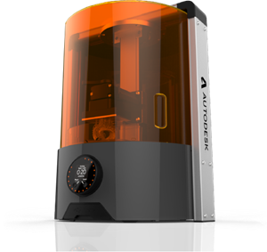
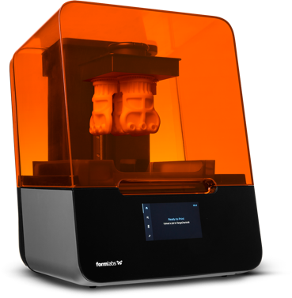
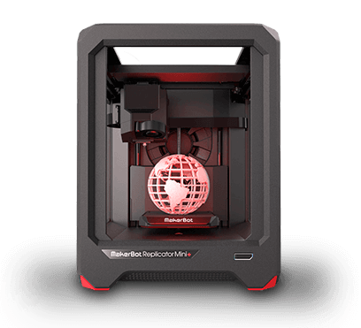

DEFINICIÓN
Es un proceso por el cual se crean objetos físicos colocando un material por capas en base a un modelo digital. Todos los procesos de impresión 3D requieren que el software, el hardware y los materiales trabajen en conjunto.
Los métodos más comunes de la impresion 3D son:
FABRICACIÒN CON FILAMENTO FUNDIDO (FFF)
Es tambien conocida como Modelado por deposición fundida (MDF), este método de impresión 3D calienta y extrude materiales plásticos.
ESTEREOLITOGRAFÍA (SLA)
Este método de impresión 3D utiliza la luz UV para curar o endurecer resinas, capa por capa.
SINTERIZADO SELECTIVO POR LASER (SLS)
Este método de impresión 3D, común en la manufactura industrial, utiliza láser para fusionar materiales pulverizados, capa por capa.
TIPOS DE IMPRESORAS
Estos son algunas impresoras que hoy en día existen en el mercado:
EMBER
Fue la primera impresora 3D de código abierto apta para producción. Ember utiliza tecnología SLA de procesamiento de luz digital de alta resolución. Permite imprimir piezas digitales con una precisión de 25 micrones para obtener superficies con acabado suave. Como parte de una plataforma 3D abierta, Ember puede trabajar con distintas resinas..
FORM 1
Funciona con tecnología SLA (estereolitografía) y tiene un láser de segunda generación, cuatro veces más potente que el de su predecesora, permitiendo un 50% más de velocidad en la impresión. También ofrece mayor precisión y una superficie más lisa.
REPLICATOR
Es una de las impresoras más rápidas y fáciles de utilizar para realizar modelos de calidad profesional, siendo una impresora 3D robusta y durable para impresiones de alta velocidad, con un chasis de calidad industrial.
SABÌAS QUE...
La tecnología de impresoras 3D no es nueva. De hecho, a nivel industrial se utiliza para construir prototipos y maquetas desde hace más de treinta años. Lo que resulta novedoso es su desembarco en el ámbito de consumo. Hasta ahora los modelos habían sido demasiado caros y su rendimiento sólo podía ser aprovechado por empresas con necesidades muy específicas. La posibilidad de comercializar masivamente estos dispositivos ha despertado un interés por mejorarlos e investigar avances. Todavía hay muchos aspectos que se pueden mejorar de las impresoras 3D. Además, al tratarse de un tema tan reciente existen detalles que se pierden entre la marea de información que va surgiendo sobre el tema. En este artículo te proponemos seis curiosidades acerca de la impresión 3D de las que tal vez no hayas oído hablar.